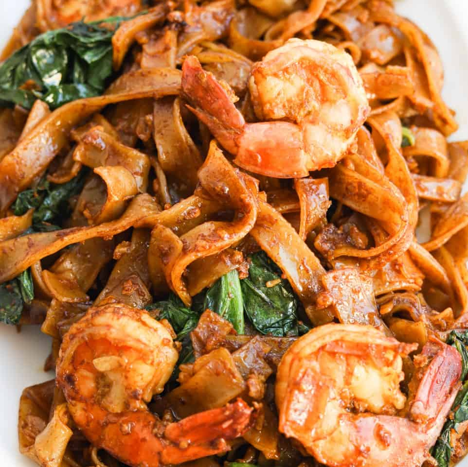

Pad See Ew

Description
Pad See Ew is a Thai noodle dish made using flat noodles which is bursting with a slightly sweet, savoury umami flavour.
Ingredients
Noodles
- 200g wide flat rice noodles
sauce
2 tbsp dark soy sauce
2 tbsp oyster sauce
2 tsp soy sauce
2 tsp white vinegar
2 tsp sugar
2 tbsp water
Stir Fry
3 tbsp peanut or vegetable oil
2 garlic cloves, very finely chopped
150g boneless chicken thighs
1 large egg
4 stems of chinese broccoli
Steps
Preparation
- Chinese Broccoli - trim ends, cut into 7.5cm/3" pieces. Separate leaves from stems. Cut thick stems in half vertically so they're no wider than 0.8cm / 0.3" thick.
- Noodles – Prepare according to packet directions and drain. Time it so they’re cooked just before using – do not leave cooked rice noodles lying around, they break in the wok
- Sauce – Mix ingredients until sugar dissolves.
Cooking
- Heat oil: Heat 1 tbsp oil in a very large heavy based skillet or wok over high heat.
- Cook garlic and chicken: Add garlic, cook 15 seconds. Add chicken, cook until it mostly changes from pink to white.
- Chinese broccoli STEMS: Add Chinese broccoli stems, cook until chicken is almost cooked through.
- Chinese broccoli LEAVES: Add Chinese broccoli leaves, cook until just wilted.
- Scramble egg: Push everything to one side, crack egg in and scramble.
- REMOVE chicken from wok: Remove everything in the wok onto a plate (scrape wok clean).
- Caramelise noodles: Return wok to stove, heat 2 tbsp oil over high heat until it starts smoking (HOT is key!). Add noodles and Sauce. Toss as few times as possible to disperse Sauce and make edges of noodles caramelise – about 1 to 1 1/2 minutes.
- Add chicken back in: Quickly add chicken and veg back in, and toss to disperse. Serve immediately!